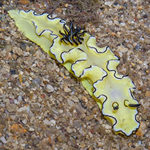
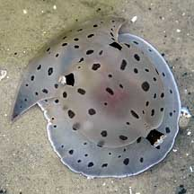
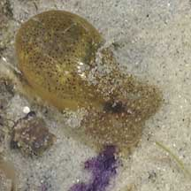

|
|
| molluscs text index | photo index |
| Phylum Mollusca > Class Gastropoda |
| Sea
slugs updated Jul 2020
What are slugs? Sea slugs belong to Phylum Mollusca and Class Gastropoda. They look like naked snails, i.e., without shells. Sea slugs are of course those found in the sea. There are also slugs that live on land. Sea slugs may be generally differentiated into two main groups. Members of one group breathe with lungs. These include pulmonate sea slugs such as the Onch slugs of the Family Onchidiidae. Members of another group breathe with gills. These include the Opisthobranchs or just plain sea slugs.
|
 Cheesecake nudibranch, among the most commonly seen of our nudibranchs. |
 The Black phyllid another commonly encountered nudibranch. |
 The Blue dragon nudibranch can be numerous at times. |
| Where seen? You will be almost
certain to see a sea slug on a visit to any of our shores. Onch slugs
can be found among the rocks near the high water mark, while other
slugs are found further down where it is almost always covered in
water. Some are burrowing and many are found on or near their food.
Some sea slugs are stunningly beautiful, among them, nudibranchs. Features: Sea slugs range from large sea hares of 10cm to tiny nudibranchs 1cm or less. Sea slugs generally lack large external shells. Some many have external shells but cannot fully retract their bodies into these shells like other 'regular' snails do. Other sea slugs may have internal shells. Most sea slugs don't have any shells at all. Sometimes confused with flatworms. Here's more on how to tell slugs from flatworms, and how to tell apart the different kinds of slugs. |
 Sea hares Order Anaspidea |
 Sacoglossans Order Sacoglossa |
 Side-gill slugs Order Notaspidea |
| Not
softies: Although
they lack shells, slugs are not helpless. Some taste bad, others release
toxic or irritating substances. Yet others incorporate stingers of
sea anemones, hydroids and other cnidarians that they feed on and use these to protect themselves. What do they eat? As a group, sea slugs eat a wide variety of plants and animals. But each species usually specialises in one kind of food. Slug babies: Most slugs are simultaneous hermaphrodites, that is, each animal has both male and female reproductive organs at the same time. The details of the way each reproduces is covered in the fact sheets on them. |
 Bubble shell snails Order Cephalaspidea |
 Tailed slugs Order Cephalaspidea |
 Onch sea slugs commonly encountered on our rocky shores. |
| Human (ab)uses: Slugs do poorly in
home aquariums because most have specialised diets (e.g., only specific
species of sponges). Most eventually die a slow death from starvation.
Some slugs may release highly toxic substances when stressed and may
thus kill everything in the tank. Status and threats: None of our sea slugs are listed among the endangered animals of Singapore. However, like other creatures of the intertidal zone, they are affected by human activities such as reclamation and pollution. Trampling by careless visitors and over-collection can also have an impact on local populations. |
| Sea
slugs on Singapore shores See text index and photo index of molluscs on this site List of threatened molluscs in Singapore |
Links
|